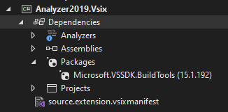
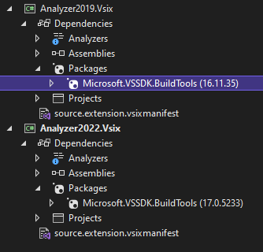

All posts in the series:
Part 1: Roslyn Analyzer - explained
Part 2: Roslyn Analyzer - writing an analyzer
Part 3: Roslyn Analyzer - writing a code fix
Part 4: Roslyn Analyzer - testing an analyzer and code fix
Part 5: Roslyn Analyzer - tips and tricks (this post)
All code in the posts, including the sample project and working analyzer and code fix are available on Github.
Tips and tricks
This post contains a list of tips and tricks, work-around's and other bits of (what I find) useful information to aid in developing analyzers.
Analyzer tips and tricks
Compatibility
If an analyzer is created in Visual Studio 2019 using the Analyzer with Code Fix project - it will not be initially compatible with Visual Stdio 2022 (or visa versa).
The actual analyzer and code fix code itself is compatible (as its .NET Standard 2.0), however the VSIX project is not compatible

To have the VSIX project work in Visual Studio 2022, the Microsoft.VSSDK.BuildTools reference needs to be updated to version 17. However doing so will mean it will no longer be supported in Visual Studio 2019.
To have the analyzer work in both Visual Studio 2019 and Visual Studio 2022, two VSIX projects need to be created in the solution. One will be for Visual Studio 2019 and have a Microsoft.VSSDK.BuildTools reference of version 15 or 16, and the other for Visual Studio 2022 with a Microsoft.VSSDK.BuildTools reference of 17.

Syntax tree
Sometimes when using the Syntax Visualizer, detailed in the section Writing an analyzer - interrogate the syntax tree, the tree in the Syntax Visualizer windows stops refreshing when selecting items in the code, and will appear blank.
To force a refresh of the window, make a small code change - for example, add a remove a semi-colon in code. This will force the window to refresh and the syntax tree will appear and refresh correctly (until the next time it stops working).
Additional files
While an analyzer can inspect non-code files (such as the appsettings.json in the sample), these "additional files" are not included as part of the Roslyn checks by default. A file has to specifically be marked as an additional file for Roslyn to be able to work with it.
This is done by specifying the files Build Action to be C# analyzer additional file on the file's Properties window in Visual Studio.

When an analyzer is dependent on the additional file being present, as is the case in the sample analyzer, then a diagnostic can be raised if the additional file cannot be found.
In the below example, the ADEF002 diagnostic is raised if the appsettings.json hasn't been included as an additional file - if it doesn't have a build action of C# analyzer additional file.
// if there is no file to query, then report a diagnostic
if (context.Options.AdditionalFiles == null ||
!context.Options.AdditionalFiles.Any(x => x.Path
.EndsWith("appsettings.json", StringComparison.OrdinalIgnoreCase)))
{
var diagnostic002 = Diagnostic.Create(rule002, Location.None);
context.ReportDiagnostic(diagnostic002);
return;
}
Code fix tips and tricks
Modify non-code
While it is possible to have an analyzer inspect non-code files (such as the appsettings.json in the sample), it is not possible to have the code fix modify these files. The code fix is only able to modify the syntax tree, which a non-code file will obviously not have.
A solution to this is the demonstrated in the sample analyzer. Diagnostic ADEF003 ensures that the connection string name specified in code exists in the appsettings.json file. As an analyzer can inspect the json file, it is successfully able to trigger the diagnostic, however the associated code fix is unable to modify the json.
Instead, a comment snippet is inserted above the offending code block, with the correct json, and a message informing the developer what to do with it.
In the below example, no connection string called SampleDatabase was present in the appsettings.json, so a diagnostic was triggered.
Before code fix has been applied:
.ConfigureServices((context, services) => services
.AddDbContext<SampleContext>(x => x
.UseSqlite(context.Configuration.GetConnectionString("SampleDatabase")))
).Build();
After code fix has been applied:
.ConfigureServices((context, services) => services
/* Ensure the below JSON snippet exists in appsettings.json.
{
"ConnectionStrings": {
"SampleDatabase": "Data Source=LocalDatabase.db"
}
}
*/
.AddDbContext<SampleContext>(x => x
.UseSqlite(context.Configuration.GetConnectionString("SampleDatabase")))
).Build();
This code fix however does not fully resolve the diagnostic. Only once the json snippet has been manually copied in the appsettings.json file by the developer will the analyzer stop reporting the diagnostic.
Unit test tips and tricks
VSIX debugging
Using the VSIX project, which is part of the analyzer template, is a critical tool to test and debug an analyzer, and see how it performs in an Visual Studio instance (vs running units tests to ensure the functionality is correct). However occasionally when running the VSIX project, the updated version of the analyzer does get installed/loaded into the debugging Visual Studio instance.
Performing one of these two options usually resolves the issue:
Explicitly build/rebuild each project in the
analyzersolution before running theanalyzerVSIX project.Delete the cache for the debug Visual Studio instance. The cache is stored in the user folder:
C:\Users\username\AppData\Local\Microsoft\VisualStudio\xxxxRoslyn.Deleting this cache will removing any settings, cache for the debug Visual Studio instance, and the next time its opened it will be as if it was the first time, and the updated version of the extension will be installed for the "first time".
Series Finale
The series of posts have hopefully given enough base information to give a basic understand of what an analyzer and code fix are, what the various components are and how they fit together, and how they can successfully be tested using a number of methods.
The source code for full working analyzer and code fix, as well as the sample application is all available on Github.